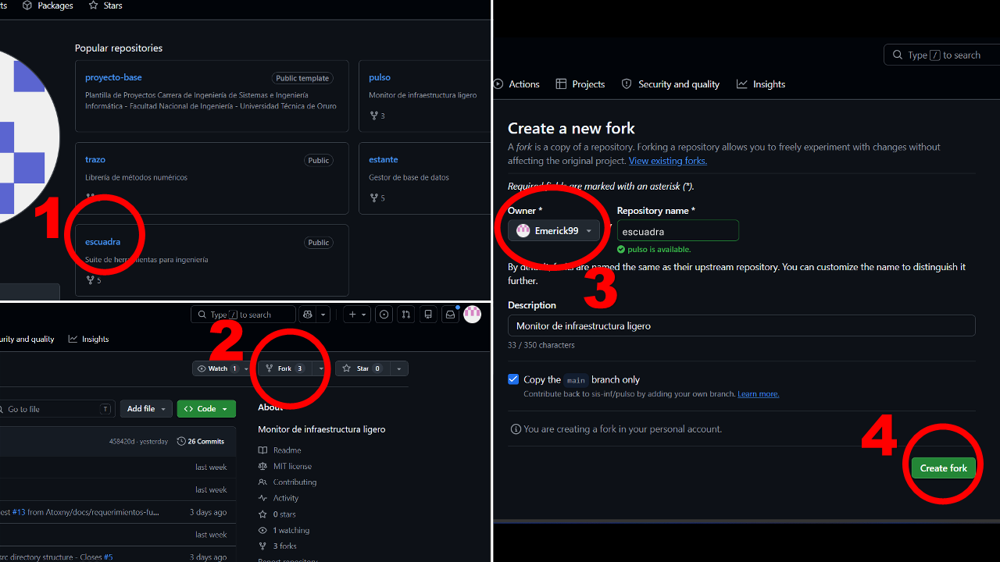
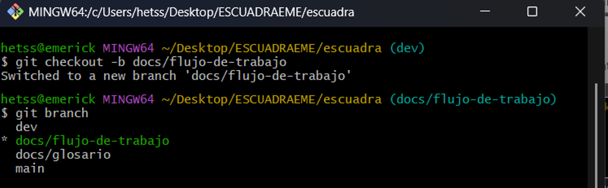
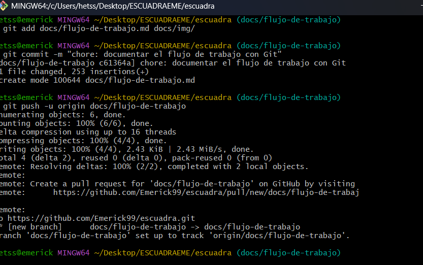
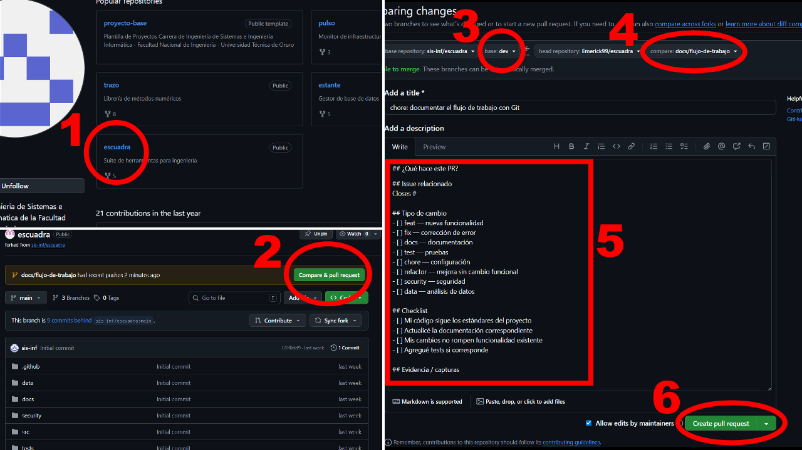

Flujo de trabajo con Git: Forking Workflow para ChuspaCalc
Introducción
El Forking Workflow es una forma de trabajo colaborativo en GitHub donde cada integrante realiza una copia del repositorio principal, llamada fork.
Desde ese fork, cada persona puede trabajar en una rama propia, hacer cambios, subirlos a GitHub y proponerlos al proyecto principal mediante un Pull Request.
Este flujo ayuda a mantener ordenado el trabajo del equipo y evita modificar directamente las ramas principales del repositorio original.
Diagrama del flujo de ramas
Fork
↓
Rama feature/fix/docs
↓
Pull Request
↓
dev
↓
main
El flujo actual del proyecto sigue el recorrido:
fork → rama-feature → PR → dev → main
1. Hacer fork del repositorio
El primer paso es crear una copia del repositorio principal en nuestra cuenta de GitHub.
Pasos
- Ingresar al repositorio principal del proyecto.
- Hacer clic en el botón Fork.
- Seleccionar nuestra cuenta como destino.
- Hacer clic en Create fork.
Después de este paso, GitHub creará una copia del repositorio en nuestra cuenta personal.

Figura 1. Creación del fork del repositorio principal.
2. Clonar el fork en la computadora
Una vez creado el fork, se debe clonar el repositorio en la computadora.
git clone https://github.com/TU-USUARIO/NOMBRE-DEL-REPOSITORIO.git
Luego se ingresa a la carpeta del proyecto:
cd NOMBRE-DEL-REPOSITORIO
También se recomienda agregar el repositorio original como remoto upstream:
git remote add upstream https://github.com/ORGANIZACION/NOMBRE-DEL-REPOSITORIO.git
3. Sincronizar el proyecto con la rama dev
Antes de crear una nueva rama, es importante actualizar el proyecto con los últimos cambios del repositorio original.
git checkout dev
git pull upstream dev
Esto permite trabajar sobre una base actualizada y evita conflictos innecesarios.
4. Crear una rama de trabajo
La rama se crea con el siguiente comando:
git checkout -b docs/flujo-de-trabajo
Ejemplos de ramas según el tipo de tarea:
git checkout -b feat/calculadora
git checkout -b fix/error-conversion
git checkout -b docs/flujo-de-trabajo
Para verificar que estamos en la rama correcta:
git branch
Debe aparecer marcada con un asterisco:
* docs/flujo-de-trabajo

Figura 2. Creación y verificación de la rama docs/flujo-de-trabajo.
5. Crear o modificar archivos
En este caso, se debe crear el archivo:
docs/flujo-de-trabajo.md
6. Hacer commit de los cambios
Primero se agregan los archivos modificados:
git add docs/flujo-de-trabajo.md docs/img/
Antes de realizar el commit, ejecutar las verificaciones automáticas:
pre-commit run --all-files
Si pre-commit realiza correcciones automáticas, volver a agregar los archivos:
git add docs/flujo-de-trabajo.md docs/img/
Luego se realiza el commit:
git commit -m "chore: documentar el flujo de trabajo con Git"
El commit guarda los cambios de forma local con un mensaje que describe lo realizado.
7. Hacer push de la rama
Después de hacer el commit, se debe subir la rama al repositorio remoto.
git push -u origin docs/flujo-de-trabajo
El comando push envía los cambios desde la computadora hacia GitHub.

Figura 3. Commit de los cambios y subida de la rama a GitHub.
8. Abrir un Pull Request
Cuando la rama ya está subida a GitHub, se debe abrir un Pull Request para proponer los cambios al repositorio principal.
Pasos
- Entrar al repositorio en GitHub.
- Hacer clic en Compare & pull request.
- Verificar que la rama destino sea
dev. - Verificar que la rama de origen sea:
docs/flujo-de-trabajo
- Completar la descripción del Pull Request.
-
Hacer clic en Create pull request.
-
Verificar que las comprobaciones automáticas de CI se ejecuten correctamente.
- Corregir cualquier error reportado por CI antes de solicitar la revisión del Pull Request.

Figura 4. Creación del Pull Request desde la rama docs/flujo-de-trabajo.
9. Errores comunes y cómo resolverlos
Error 1: Trabajar directamente en la rama dev o main
Uno de los errores más comunes es hacer cambios directamente en una rama principal, como dev o main.
Para verificar la rama actual:
git branch
Si estás en dev o main, crea una rama nueva antes de continuar:
git checkout -b docs/flujo-de-trabajo
De esta manera, los cambios quedan separados y se evita modificar directamente una rama principal.
Error 2: Olvidar hacer git add antes del commit
A veces se intenta hacer commit, pero Git indica que no hay cambios agregados.
Ejemplo del problema:
nothing added to commit
Solución:
git status
git add docs/flujo-de-trabajo.md docs/img/
git commit -m "chore: documentar el flujo de trabajo con Git"
El comando git add prepara los archivos para que puedan ser incluidos en el commit.
Error 3: El push falla porque la rama no existe en GitHub
Cuando se sube una rama nueva por primera vez, puede ser necesario usar -u.
Solución:
git push -u origin docs/flujo-de-trabajo
La opción -u conecta la rama local con la rama remota, haciendo más fácil usar git push en el futuro.
Error 4: El fork está desactualizado
Si el repositorio principal tuvo cambios nuevos, el fork puede quedar desactualizado.
Solución:
git checkout dev
git pull upstream dev
Luego se puede crear una nueva rama actualizada:
git checkout -b docs/flujo-de-trabajo
Esto ayuda a evitar conflictos al momento de abrir el Pull Request.
10. Recomendaciones finales
- Crear una rama nueva para cada issue.
- Usar nombres de ramas claros y relacionados con la tarea.
- Revisar los cambios con
git statusantes de hacer commit. - Escribir mensajes de commit descriptivos.
- Subir la rama al fork usando
git push. - Abrir un Pull Request para que el equipo revise los cambios.
- No trabajar directamente sobre
devomain.
Conclusión
El Forking Workflow permite colaborar de manera ordenada en ChuspaCalc.
Cada integrante trabaja desde su propio fork, crea una rama para cada tarea, realiza sus cambios, los sube a GitHub y finalmente abre un Pull Request para que el equipo pueda revisarlos antes de integrarlos al proyecto principal.